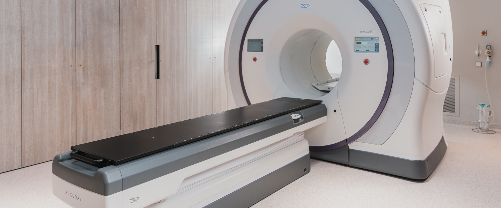

@@include('./layout/header.html')
@@include('./layout/slide.html')
@@include('./layout/navigation.html')
煥顏
口腔
煥顏口腔顎面外科診所是全國第一家，也是目前唯一以口腔顎面外科提出申請臉部削骨、正顎手術醫美認證，並獲得AMCQC認證標章的診所。
預約諮詢
煥顏口腔顎面外科診所
煥顏口腔顎面外科診所是全國第一家，也是目前唯一以口腔顎面外科提出申請臉部削骨、正顎手術醫美認證，並獲得AMCQC認證標章的診所。口腔顎面外科是牙科中的一個專業分科，專門治療「口腔、顏面、顎骨」的相關問題。醫師必須具備醫學與牙醫學的專業知識與訓練才能執行業務，目前是衛生署所認定的專科醫師之一。煥顏的服務項目包刮：正顎、削骨、All-on-4全口重建、人工植牙、補骨、下巴整形、齒顎矯正後補脂、整臉精雕、阻生齒拔除、美白療程…等，故「無一般牙科治療」。
First choice for facial beauty
顎面第一選擇



醫學中心開顱手術規格手術室
人工植牙全口重建中心引進國外原裝進口，高階全頭顱CT電腦斷層掃描儀（Computed
Tomography）360度呈現口內細微情況與變化，透過高階電腦斷層、口腔剖面圖，精準掌握骨質狀況，為3Ｄ人工植牙手術判斷的導航利器，讓微創植牙精準快速安全。
Read more ->
@@include('./layout/footer.html')